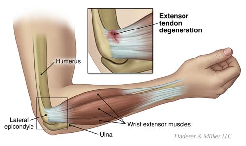

Cloud Microphysics: 4-Page Summary
Global Biogeochemical Cycles: 4-Page Summary
Cloud Dynamics Hurricanes: 4-Page Summary
Numerical Modelling of Weather and Climate: Isentropic Model Report
Organic Geochemistry and the Global Carbon Cycle: Long Summary
Resource and Environmental Economics: Learning Goals
Climate History and Paleontology: Catalogue of Questions
 At the end of my Bachelor’s in 2016, I started to write all my lecture summaries on my laptop. While working at uni, I always used the trackpad on my laptop. Slowly but surely I started to develop many Epicondilitis Lateralis (sometimes also called Tennis Elbow or RSI) symptoms in my elbow, forearm and fingers: from pain, stiffness and throbbing all the way to tingling sensations and cramps. Whenever the pain was bad, I just started to use my other hand to continue working. After a few months I had symptoms in both of my forearms. Using a regular mouse also really hurt. My dad developed the same injury many years ago and could help me with a lot of helpful tips. As a note to the trigger which caused the syndrome, he calls it ‘Epicondilitis Microsoftis Mausis’.
There are many ways to effectively reduce the pain while continuing work on a computer, here are the ones that worked for me:
{kind=link}